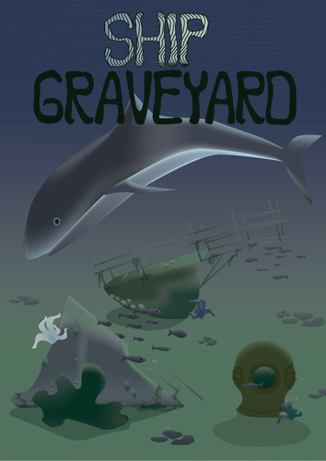
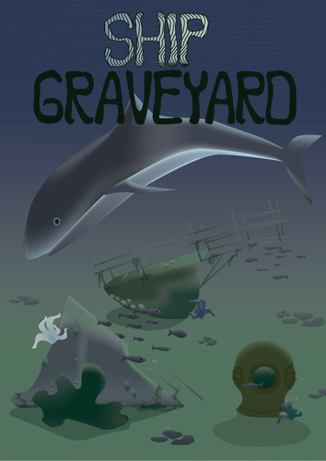

Adobe Illustrator, set piktograma za turističko naselje te zoološki vrt.

Prva dva rada su također Adobe Illustrator, predstavljaju infografiku te plakat teme Podmorja, dok je treći plakat rađen u programu Adobe Photoshop.
 


Par izdvojenih komponenti od koncepta moje stolne igre, točnije karta šanse, imaginarni logo te žetoni resursa.